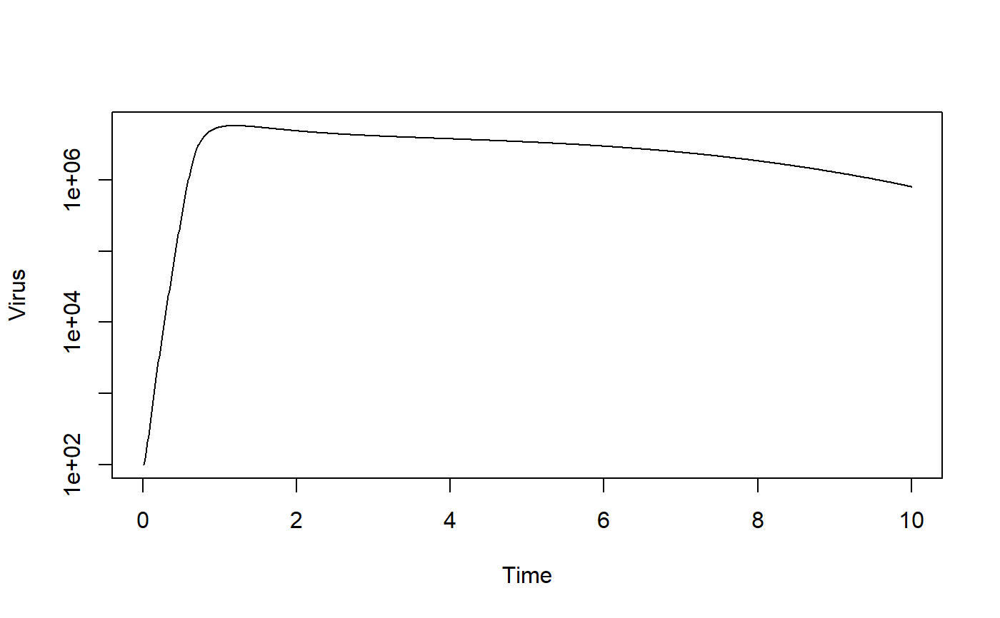

R/simulate_virusandir.R
simulate_virusandir.RdThis function runs a simulation of a compartment model using a set of ordinary differential equations. The user provides initial conditions and parameter values for the system. The function simulates the ODE using an ODE solver from the deSolve package. The function returns a matrix containing time-series of each variable and time.
simulate_virusandir(U0 = 1e+05, I0 = 0, V0 = 10, T0 = 0, B0 = 1, A0 = 0, tmax = 20, n = 0, dU = 0, dI = 1, dV = 4, b = 1e-05, p = 1000, sF = 0.01, kA = 1e-05, kT = 1e-05, pF = 1, dF = 1, gF = 1, Fmax = 1000, hV = 1e-06, hF = 1e-05, gB = 1, gT = 1e-04, rT = 0.5, rA = 10, dA = 0.2)
| U0 | initial number of uninfected target cells |
|---|---|
| I0 | initial number of infected target cells |
| V0 | initial number of infectious virions |
| T0 | initial number of T cells |
| B0 | initial number of B cells |
| A0 | initial number of antibodies |
| tmax | maximum simulation time, units depend on choice of units for your parameters |
| n | rate of new uninfected cell replenishment |
| dU | rate at which uninfected cells die |
| dI | rate at which infected cells die |
| dV | rate at which infectious virus is cleared |
| b | rate at which virus infects cells |
| p | rate at which infected cells produce virus |
| sF | strength of innate response at reducing virus production |
| kA | rate of virus removal by antibodies |
| kT | rate of infected cell killing by T cells |
| pF | rate of innate response production in absence of infection |
| dF | rate of innate response removal in absence of infection |
| gF | rate of innate response growth during infection |
| Fmax | maximum level of innate response |
| hV | innate growth saturation constant |
| hF | B-cell growth saturation constant |
| gB | maximum growth rate of B cells |
| gT | T-cell induction rate |
| rT | T-cell expansion rate |
| rA | rate of antibody production by B cells |
| dA | rate of antibody decay |
A list. The list has only one element, called ts. ts contains the time-series of the simulation. The 1st column of ts is Time, the other columns are the model variables.
A compartmental infection model is simulated as a set of ordinary differential equations, using an ode solver from the deSolve package.
This function does not perform any error checking. So if you try to do something nonsensical (e.g. specify negative parameter or starting values), the code will likely abort with an error message.
See the Shiny app documentation corresponding to this simulator function for more details on this model. See the manual for the deSolve package for details on the underlying ODE simulator algorithm.
# To run the simulation with default parameters just call the function: result <- simulate_virusandir() # To choose parameter values other than the standard one, specify them, like such: result <- simulate_virusandir(V0 = 100, tmax = 10, n = 1e5, dU = 1e-2, kT=1e-7) # You should then use the simulation result returned from the function, like this: plot(result$ts[,"Time"],result$ts[,"V"],xlab='Time',ylab='Virus',type='l',log='y')